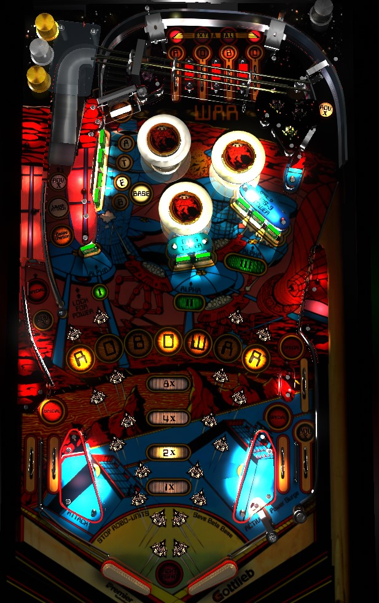

Not to be confused with Robocop (Data East, 1989).
Get the game's multiplier as high as you like by shooting shots lit for Advance X, then try to always be in multiball. The left ramp shot is always available to lock a ball or release the lock and start multiball. During multiball, all drop targets add 5,000 points times the game's multiplier to the Multi-Bonus, which is collected at the end of the game or by shooting the left ramp during multiball. The right in and out lanes are reversed; the right in lane at the edge of the table briefly lights the spinner just left of the pop bumpers for 10,000 points per spin.
Collected Robowar letters each contribute 10,000 points to the base bonus, which is affected by the game's multiplier. Robowar letters carry over from ball to ball. Spelling Robowar in full lights a special, which moves between the the left dead-end lane, the left in lane, the right in lane, and the right out lane based on spinner, slingshot, and pop bumper hits. At least 2 completions of Robowar can be held in memory for the purposes of end of ball bonus (possibly more, I'm not certain). Depending on game settings, there are either 2 or 3 ways to earn Robowar letters:
There are 4 possible places to advance the game's multiplier: the left dead-end lane, the left ramp shot, the right orbit, and the right in lane. Depending on game settings and whether the game is set to 3 or 5 balls, anywhere from 1 to 3 of these shots can be lit for Adv. X at any given time, changing based on various switch hits such as the spinner, pop bumpers, and slingshots. The multiplier can be advanced as high as 15x and is reset on every ball. The multiplier affects the Multi-Bonus in multiball as discussed in the next section as well as serving as a bonus multiplier for Roboowar letters.
In single ball play, the left ramp is always available to either lock a ball, or release a ball if one has been locked already. Locking a ball scores 50,000 points. In a multiplayer game, each person has to lock their own ball before multiball is available, but if someone starts multiball, everyone else loses the credit for their locked ball. Multiball always has 2 balls.
During multiball, the Multi-Bonus is made available and can be increased. Any drop target knocked down in any of the 4 banks during multiball adds 5,000 points times the game's current multiplier to the Multi-Bonus. Multi-Bonus can be collected at any time by shooting the left ramp during multiball; otherwise, it is only collected at the end of the entire game. Multi-Bonus is not reset when it is collected, so after you've spent a fair amount of time in multiball, the left ramp is a repeatable shot that can be worth multiple millions of points. Multi-Bonus continues to accumulate across multiple multiballs within the same game. Absolutely do not tilt on the final ball of the game if you were able to play multiball, lest you forfeit your Multi-Bonus in addition to your standard end of ball bonus.
At the start of each ball, one pop bumper is lit. Lit pop bumpers score 10,000 points, while unlit pop bumpers score 1,000. Collecting a Robowar letter from the Beta drop targets lights one additional pop bumper. Each pop bumper hit rotates which bumper(s) are lit as well as which lanes and target are lit for special, extra ball, and Advance X.
The spinner scores 1,000 points per spin. Going through the right in lane at any time lights the spinner for Power Surge, which means each spin scores 10,000 points for about 7 seconds. Shooting a lit spinner is the best source of points from a single shot anywhere in the game outside of collecting a very large Multi-Bonus during multiball, but adequately ripping a lit Power Surge spinner can be surprisingly difficult if the ball comes down the right in lane with a lot of speed.
Scores 5,000 points and can be lit for Adv. X or Special.
The left side of the table bottom is conventional, with one in lane and one out lane. On the right side, the lane layout is reversed, with the right in lane being near the edge of the table and crossing over the right out lane; be aware of the possibility of an out lane ball being able to be nudged back toward the flipper, or of an in lane ball choking up at the crossover point and falling into the out hole. In lanes score 5,000 points; the right in lane also lights the Power Surge spinner. Out lanes score 50,000 points. Both in lanes and the right out lane score a Special when lit.
Bonus is counted as 10,000 points per collected letter in Robowar times the game's multiplier. At least 2 (probably more) completions of Robowar can be stored in the game's memory, so base bonus is not capped at 70,000 points. Multiplier is advanced by making Adv. X shots around the game; it can be increased as high as 15x and resets at the end of each ball. All Robowar letters are carried from ball to ball.
The last ball of the game also awards the current Multi-Bonus, which was built up by hitting drop targets during multiball throughout the game. Multi-Bonus is not affected by the game's multiplier when it is collected. Do not tilt your final ball if you had any success at all playing multiball, because that will cause you to lose your end of ball Robowar bonus and your Multi-Bonus.
In competition/novelty play, extra balls and specials score 500,000 points.
In a 5-ball game, drop targets score 3,000 points, and add 3,000 times multiplier to the Multi-Bonus instead of 5,000. Unlit top lanes also score 3,000 points instead of 5,000 in a 5-ball game.
Completing the Alpha drop target sequence may or may not add a Robowar letter in addition to lighting an extra ball or scoring 100,000 points.
On easy settings, there will be 3 (in a 3-ball game) or 2 (in a 5-ball game) shots lit for Adv. X at any one time. On hard settings, this is reduced to 2 or 1 for a 3- or 5-ball game respectively. There is no way to have all 4 Adv. X lights lit at once, and there will always be at least one Adv. X light available unless the game multiplier has been maxed out at 15x.